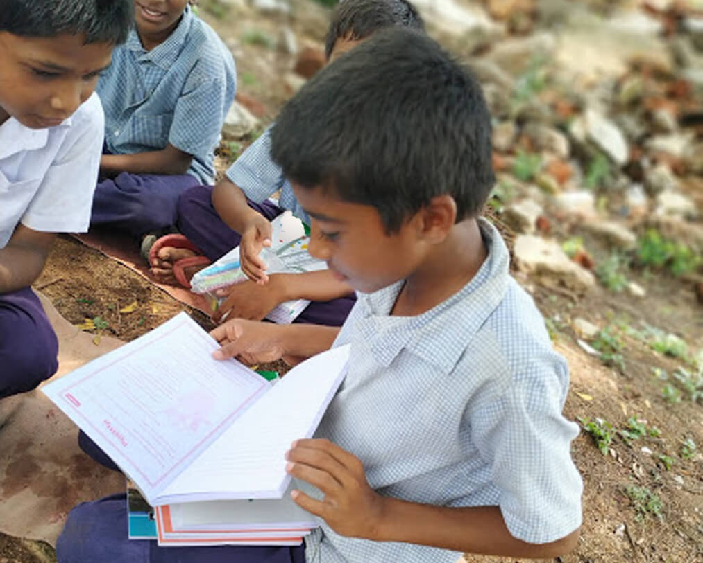

Aims & Objectives
- Encouraging students to find peaceful solutions to problems in the society
- Encouraging schools to develop social consciousness and adopt a service perspective
- Making students aware of the importance of Health, Peace, Wisdom and Environment
- Inspiring students to develop leadership skills
- Providing financial assistance to meritorious students from poor families
- Inculcating spiritual values and developing a scientific perspective
- Creating awareness about mental health
- సమాజంలోని అనేక సమస్యలకు శాంతియుత పరిష్కారాలను కనుగొనేలా విద్యార్థులను ప్రోత్సహించడం
- పాఠశాలలలో సామాజిక స్పృహ మరియు సేవా దృక్పధాన్ని ప్రోత్సహించడం
- ఆరోగ్యం, శాంతి, జ్ఞానం, పర్యావరణం పట్ల విద్యార్థులకు అవగాహన పెంపొందించడం
- విద్యార్థులు నాయకత్వ లక్షణాలను పెంపొందించుకునేలా ప్రేరేపించడం
- పేద కుటుంబాలలోని ప్రతిభావంతులైన విద్యార్థులకు ఆర్థిక సహాయం అందించడం
- ఆధ్యాత్మిక విలువలను పెంపొందిస్తూ శాస్త్రీయ దృక్పథాన్ని అలవరచుకునేలా ప్రోత్సహించడం
- మానసిక ఆరోగ్యం పట్ల సమాజానికి అవగాహన కల్పించడం